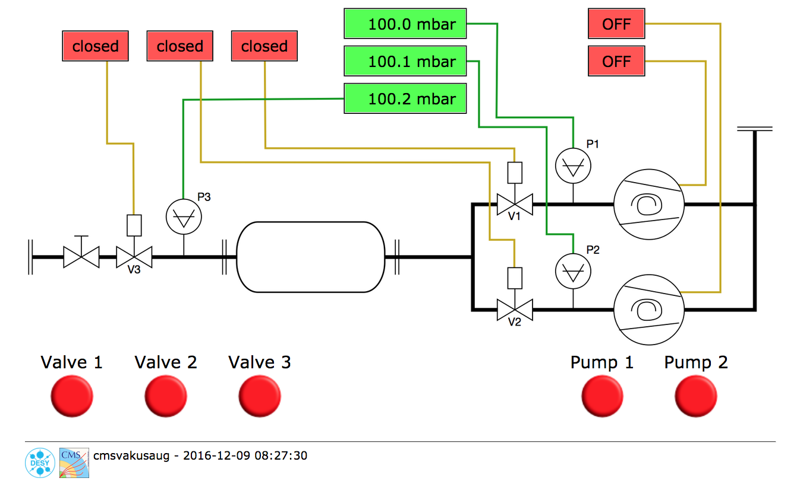

Usage

PumpStationControl
the command line program PumpStationControl communicates with the PumpStationDaemon
by sending commands and receiving and printing the daemon response on the command line.
The daemon understands the following commands:
-
writeConfig write config file.
-
setPumpState [int pump] [int state] switches on or off a pump. [int pump] can be either 1 or 2, [int state] is either 1 for ON or 0 for OFF.
-
getPumpState [int pump] returns the state of a pump. [int pump] can be either 1 or 2. The returned value is either 1 if the pump is ON or 0 if it is OFF.
-
setPumpOperatingHours [int pump] [double hours] Sets the operating hours of a pump. [int pump] can be either 1 or 2, [double hours] is the number of hours the pump has been running. This command can be used to synchronize the operating hours of a pump stored in the daemon config file with the actual value measured by the pump itself.
-
getPumpOperatingHours returns the operating hours of both pumps in hours separated by a semicolon.
-
setValveState [int valve] [int state] opens or closes a valve. [int valve] can be either 1, 2 or 3, [int state] is either 1 for OPEN or 0 for CLOSED.
-
getValveState [int valve] returns the state of a valve. [int valve] can be either 1, 2 or 3. The returned value is either 1 if the valve is OPEN or 0 if it is CLOSED.
-
getPressure [int gauge] returns the pressure reading of a gauge in mbar. [int gauge] can be either 1, 2 or 3.
-
getVacuumStatus returns the status and pressure reading of all three gauges. The individual values are separated by semicolons.